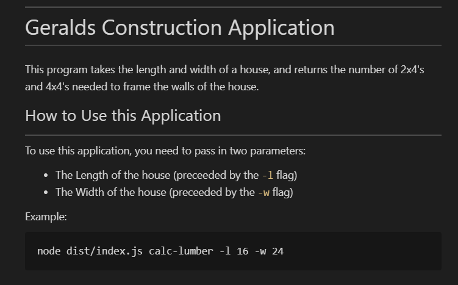
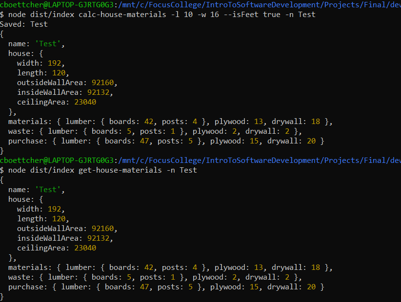

Portfolio
Here you can check out a few
of my recent projects!
Geralds Contruction Application Version 2.0.0"Geralds Construction Application" Version 2.0.0 is a fairly basic CLI applicaiton. In this application the goal was to take in two parameters(the length and width of a house). With these two parameters the application needed to return the nimber of 2x4'x and 4x4'x needed to stick frame a House. This Project had a lot of new information for me, and being about to implement it in the application successfully taught me a lot! The language used was Typescript, and I also used a new to me npm package called yargs. If you would like to check out this project, click the link below and it will take you to the Github Page! Check out my Github Repo |
 |
Geralds Contruction Application Version 3.0.0"Geralds Construction Application" Version 3.0.0 build on the previous version of the build. In this version, you are able to run two commands. (calc-wood-needed), and (find-house). To use the calc-wood-needed command you will need four parameteres. The Length of the House, the Width of the House, the Unit of measurement you will be using, and the Name for the House. This command will then calculate the number 2x4's and 4x4's needed for the build, and save the house under the name you gave it. The find-house command only takes one parameter, the Name of the house you are looking for! Once executed this command will look through the saved houses and find the one you are looking for. This iteration of the Project had even more new information for me. The ability to save and look up houses, as well as a few new npm packages such as eslint, and prettier. If you would like to check out this project, click the link below and it will take you to the Github Page! Check out my Github Repo |
|
Geralds Contruction Application Version 4.0.0"Geralds Construction Applicaiton" Version 4.0.0 build on the previous version again. In this verison, you have all the functionality that we had before, but with a few new scripts that you can run with npm. The focus of the stage of the project was writting the scripts. There are a total of eight that you can run! For a full list of the commands check out the applicaiton on Guithub. If you would like to check out this project, click the link below and it will take you to the Github Page! Check out my Github Repo |
|
Geralds Contruction Application Version 5.0.0"Geralds Construction Applicaiton" Version 5.0.0 is the final version of the project! Here we have all the functionality that was in the previous versions, plus some new features! One of the new features include the ability to recall saved houses WITH all of the information that was stored with them(in the previous versions it would only show the house name)! In this version of the project everything that we learnt in the Intro to Software Development came together. We had to impement complex interfaces, and hook everything up behind the scenes so that everything ran smoothly! If you would like to check out this project, click the link below and it will take you to the Github Page! Check out my Github Repo |
 |
YelpCampYelpCamp is a project that I worked on in a Udemy class for web-development. This web application had a ton of new functionality for me to inplement. YelpCamp is similar to Yelp, where useres are able to leave reviews and get information on different businesses. Except in this case, it is made for campsites! YelpCamp uses passport.js to Sign-up or log users in. Once you are logged in you are able to upload your own campsites, and also leave reviews on campsites. YelpCamp also had restrictions, where you must be logged in to an account before you are able to leave reviews, or enter a new campsite, although you are able to view existing reviews and campsites without being logged in! I do not have YelpCamp online to view YET as it was created with GoormIDE, but I will have it uploaded soon so you can take a look!! |